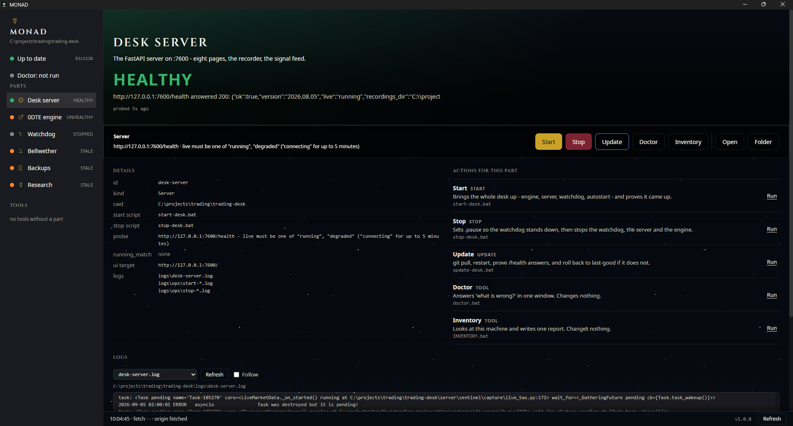

TWS / IB Gateway:7496 · read-only
Interactive Brokers Trader Workstation, logged into the live account. The only source of market data.
Where it lives
The operator's Windows box, port 7496
Trading
A read-only market desk. It records the tape, measures it, and reports what it sees. It never places an order — that is a constraint in the build, not a setting. Below is every path data takes through it, one part at a time.
Market data enters onceis measured onceand leaves by four separate doors: a tapea webhooka web page and a one-line file.
From the book to the page, once.
Interactive Brokers Trader Workstation, logged into the live account. The only source of market data.
The operator's Windows box, port 7496
The market-data connectors and the tape schema. One connector for a live TWS feed, one for replaying a recorded tape.
book + prints, read-onlyserver/sentinel/capture/
Assembles one cycle's worth of market state from the connector before the engine sees it.
server/sentinel/engine/cycle_input.py
One pass over the book and the prints, producing a market state that everything downstream reads.
server/sentinel/engine/runner.py
The three book-and-tape measures, and the session-window rules that decide when a setup counts.
market stateserver/sentinel/alerting/detectors.py
The single place every alert passes through on its way out. It counts them, sends the summary, and appends the signal line.
server/sentinel/alerting/pump.py
The live surface: current state, absorption, the recorder, the tape and signal listings, the arm and stop commands, and the read-only account view.
5 guards1 openserver/routes/live.py
Is the desk watching, and what is it seeing right now?
web/index.html, web/live/app.js
The only reader of these pages.
http://127.0.0.1:7600
The only chain that can end in a trade. It is three steps long, and it starts with a file.
The single place every alert passes through on its way out. It counts them, sends the summary, and appends the signal line.
server/sentinel/alerting/pump.py
An append-only file. One flushed line per fired break alert, and nothing else.
one flushed line per fired breakdata/signals/
The only part of this system that can place an order. It reads signal lines, applies its own rules, and mostly refuses.
the bot reads, and mostly refusesbot/ (vendored)
The platform the bot sends brackets through, over the ATI interface.
the only path to an orderThe operator's box
Nothing is believed unless it was recorded.
Owns the connection to TWS and drives the detection loop. Runs its own asyncio loop on a daemon thread.
1 guard1 openserver/live_session.py
One gzipped line per cycle, written inside the New York window (09:30-16:15 ET).
inside the NY windowdata/recordings/
The scoreboard for one session: how many setups, which triggers fired, what each one did next, and whether hidden size confirmed or rejected the break.
scored from the tapeBeside each tape; the Asia corpus routes into asia/
The session index, the per-session report and scoreboard, the pooled backtest, the doctor read-out, and the local-LLM analyst and council reads.
1 openserver/routes/review.py
What happened in this session - computed from the tape rather than from memory.
1 guard4 openweb/review.html, web/js/review.js
The only reader of these pages.
http://127.0.0.1:7600
A break that hidden size ate is not a break.
One pass over the book and the prints, producing a market state that everything downstream reads.
server/sentinel/engine/runner.py
Watches a price level soak up an attempted break - hidden size absorbing the move.
server/iceberg/absorption.py
Joins an absorption event to a break, but only when it lands inside both a time window and a price gate.
the absorptionserver/sentinel/alerting/iceberg_at_break.py
The single place every alert passes through on its way out. It counts them, sends the summary, and appends the signal line.
server/sentinel/alerting/pump.py
Posts a short human summary of an alert to one webhook.
server/sentinel/alerting/discord.py
Where alerts arrive as they happen.
a sentence, no numbersconfig/alerts.json, or DISCORD_WEBHOOK_URL
One way, and absolute.
Public macro and positioning data, pulled by the regime grader.
bellwether/bellwether/providers/
A weekday regime grader: sector rotation, macro and COT, graded to a single letter.
bellwether/ (vendored sibling)
One graded report per weekday, as HTML, Markdown and JSON.
bellwether/reports/out/
Lists the stored regime reads and frames the chosen one.
one way: the desk only readsserver/routes/regime.py
Bellwether's grade for the day, framed inside the desk.
web/regime.html
The only reader of these pages.
http://127.0.0.1:7600
…
The parts diagram needs a wider screen. The five paths above list the same parts, in order.
The desk posts reversal alerts to Discord. Below, a synthetic feed has its inputs taken away. In every case shown, the alert names the gap or is not sent at all; none prints a zero in its place.
Switch a feed off, then fire an alert.
| clock | — |
|---|---|
| mid | — |
| OBI | — |
| VWAP | — |
| CVD, 60 s | — |
| skew | — |
Mid, last 60 s. A missing book draws a gap, not a line at zero.
No alert yet. Fire one.
Fire an alert to compare.
Every input present. No iceberg line: on a reversal, that means the desk looked and found none.
Top of book only, so no imbalance. The options chain stopped updating, and its last skew is 34 s old, past the 30 s limit.
No trade prints on this feed. VWAP, CVD and the iceberg check are all built from prints. The alert still fires: a reversal needs only the book.
The chain came back with no usable quotes. For up to 30 s after the last good skew the desk says it is holding that reading, and prints no number. After that the part reads skew n/a (no 0DTE chain).
No order book, so no mid price. The desk's detector stops before it checks for any signal, and nothing is posted.
Case 3 with its gaps filled with zero. Nothing in the line says the prints were missing, and with no iceberg line it reads as looked, found none.
Alert wording and number formats are read from the desk's own code when this page is built, and the build fails if any of them has changed (desk commit 124f9a1). Skew refreshes every 15 s and goes stale past 30 s, both from the skew engine. The button fires on demand; the desk fires a reversal only when price turns far enough off a leg's extreme. Every market number on this panel is synthetic.
Three of these run right here. Every figure in the desk demo is synthetic and says so — the desk cannot be shown with real data on this machine, and inventing a market reading to look impressive is the one thing it must never do.

Topology read out of the running code: 54 parts, 78 connections,
shown 3 at a time. Guard and defect badges appear only where a part's file matched
real data — a part with no badge is unmatched, not clean.
The stage is an enhancement. With JavaScript off, every part of every path is present as a
plain document, and under reduced-motion nothing animates and nothing auto-advances.